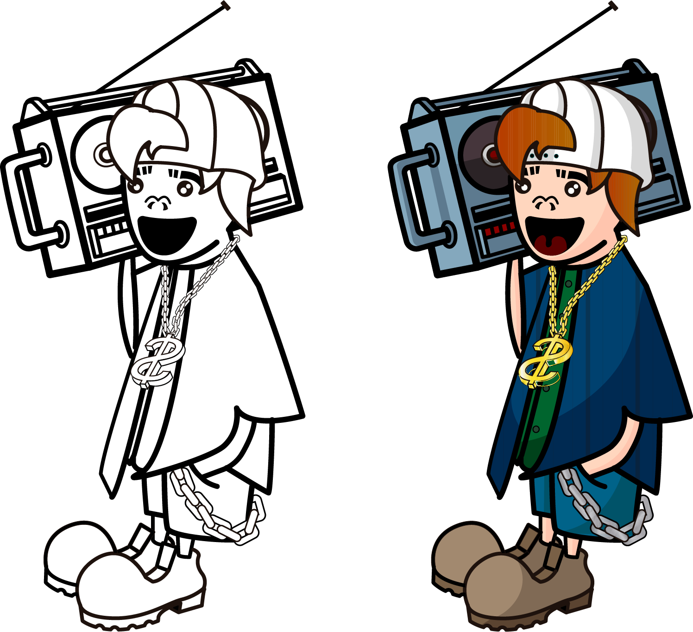

Tenho o UX Design como principal abordagem para resolver os problemas de meus clientes. Confira o
projeto Log-book , um projeto de 3 mêses em que pude bortar em prática todo meu conhecimento sobre o
processo de ensino de línguas e UX.
brand
id visual
logo
branding
Tenho o UX Design como principal abordagem para resolver os problemas de meus clientes. Confira o
projeto Log-book , um projeto de 3 mêses em que pude bortar em prática todo meu conhecimento sobre o
processo de ensino de línguas e UX.
digital
social
media
press
Tenho o UX Design como principal abordagem para resolver os problemas de meus clientes. Confira o
projeto Log-book , um projeto de 3 mêses em que pude bortar em prática todo meu conhecimento sobre o
processo de ensino de línguas e UX.
impresso
embalagem
livros
print
Tenho o UX Design como principal abordagem para resolver os problemas de meus clientes. Confira o
projeto Log-book , um projeto de 3 mêses em que pude bortar em prática todo meu conhecimento sobre o
processo de ensino de línguas e UX.
estudos
ilustração
tipografia
design

Tenho o UX Design como principal abordagem para resolver os problemas de meus clientes. Confira o
projeto Log-book , um projeto de 3 mêses em que pude bortar em prática todo meu conhecimento sobre o
processo de ensino de línguas e UX.